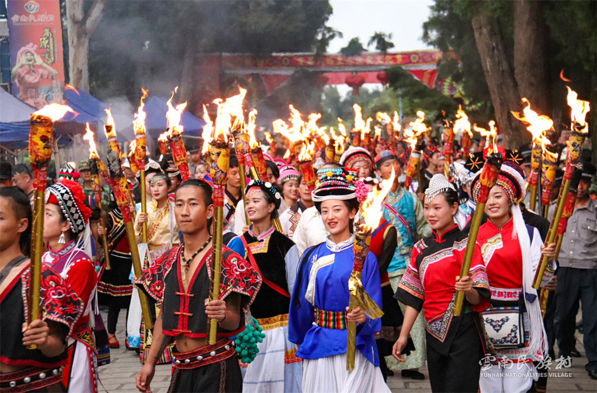
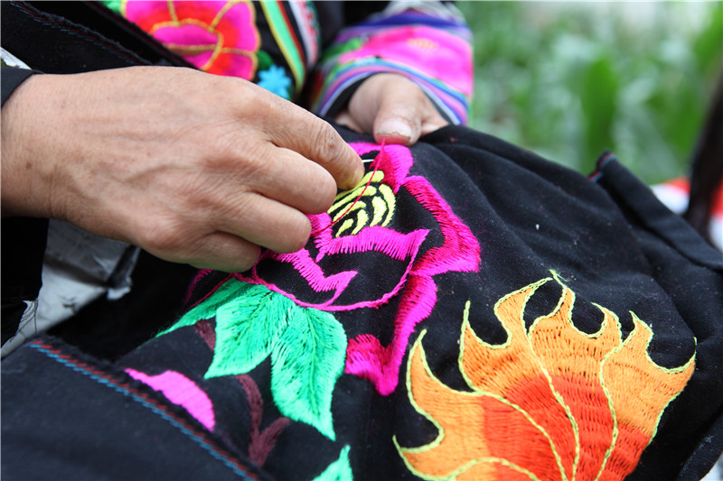
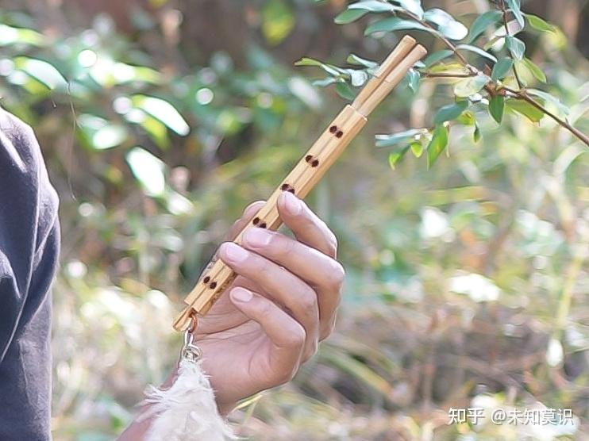
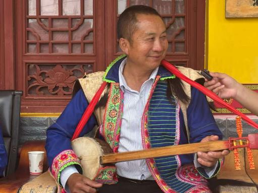
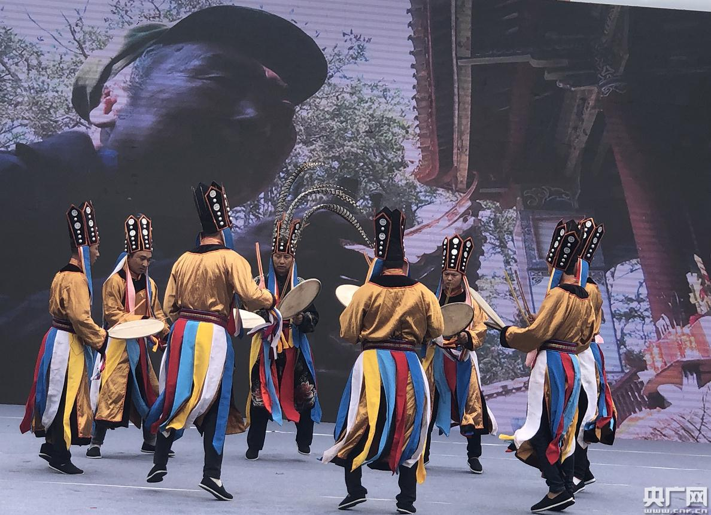
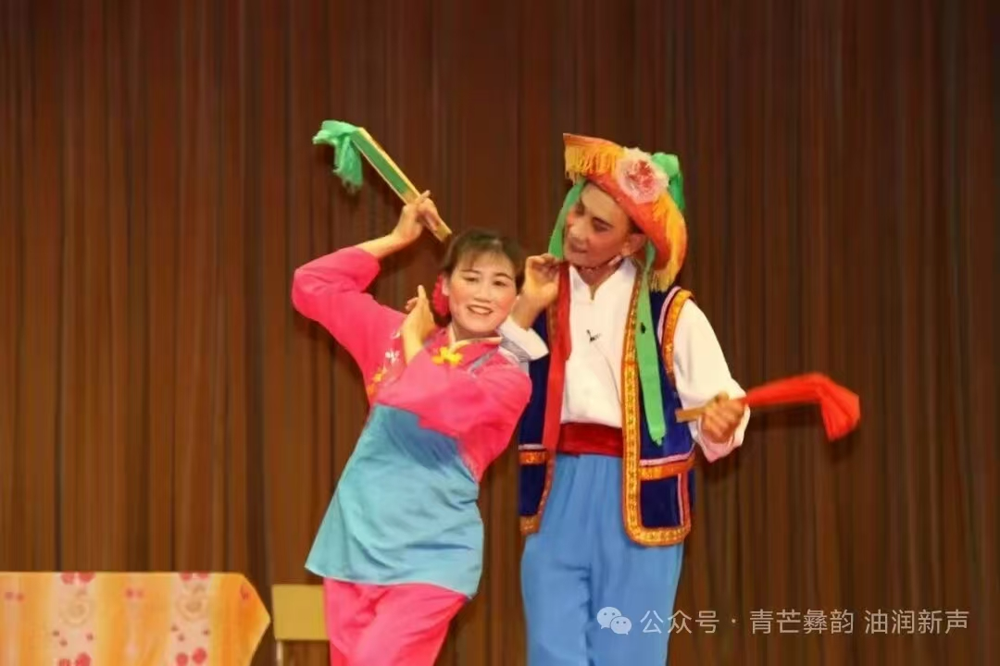
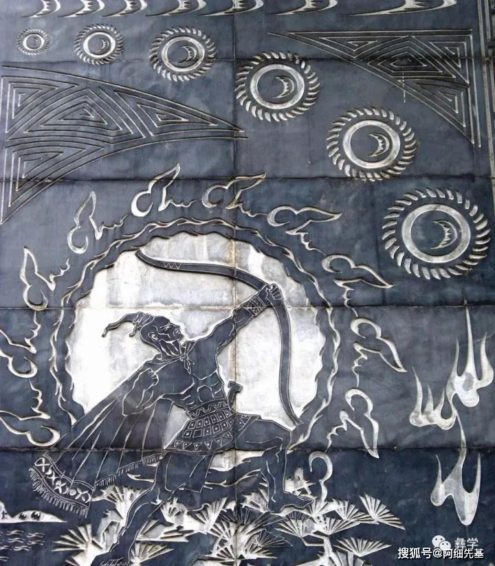

技艺分类
彝族传统技艺涵盖刺绣、乐器、舞蹈、文学等多个领域，是彝族人民在长期生产生活中创造的智慧结晶。这些技艺不仅具有极高的艺术价值，更承载着彝族的历史记忆和文化基因。
本页面展示七大传统技艺：彝族刺绣的精美绝伦、彝笛的悠扬婉转、三弦舞的欢快节奏、葫芦笙的古老神秘、羊皮鼓舞的庄重神圣、元谋花灯的民间风情，以及阿鲁举热史诗的磅礴气势。每一项技艺都是活态的文化遗产，值得我们用心保护与传承。
非遗传承——传统技艺



◎ 三弦舞
三弦舞又称"阿细跳月"，是彝族阿细人最具代表性的民间舞蹈。男子弹奏大三弦，女子拍手起舞，动作轻盈舒展，节奏明快热烈，展现了彝族人民乐观向上的精神风貌，是国家级非物质文化遗产。
查看详情 →


◎ 羊皮鼓舞
羊皮鼓舞是彝族毕摩文化的重要组成部分，舞者身着法衣，头戴神冠，手持羊皮鼓边击边舞。舞蹈庄重神秘，鼓点震撼人心，具有驱邪纳福、祭祀祖先的神圣功能，是研究彝族原始宗教的活化石。
查看详情 →


◎ 阿鲁举热史诗
《阿鲁举热》是彝族长篇英雄史诗，讲述了英雄支格阿鲁射日射月、降妖除魔、造福百姓的传奇故事。史诗规模宏大，内容丰富，是彝族文学宝库中的璀璨明珠，具有极高的文学价值和历史价值，被誉为彝族的《荷马史诗》。
查看详情 →
版权所有 禁止盗版
联系我们：dnijbv@163.com（邮箱）